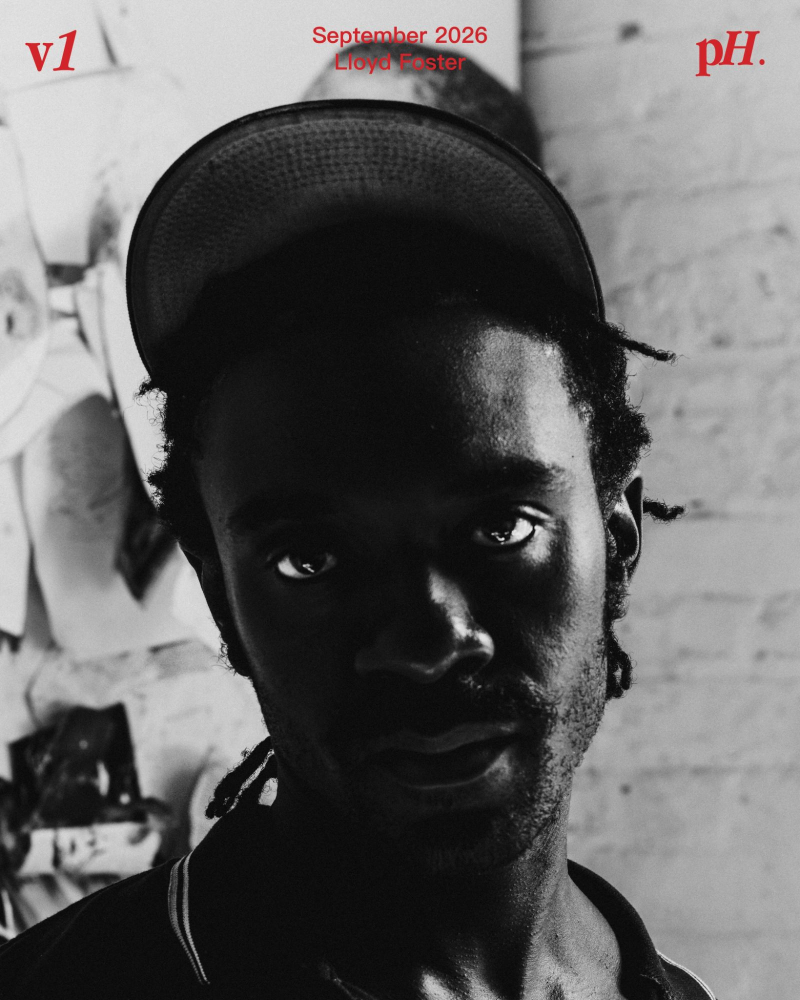
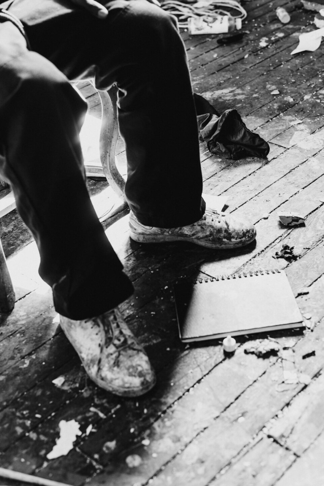
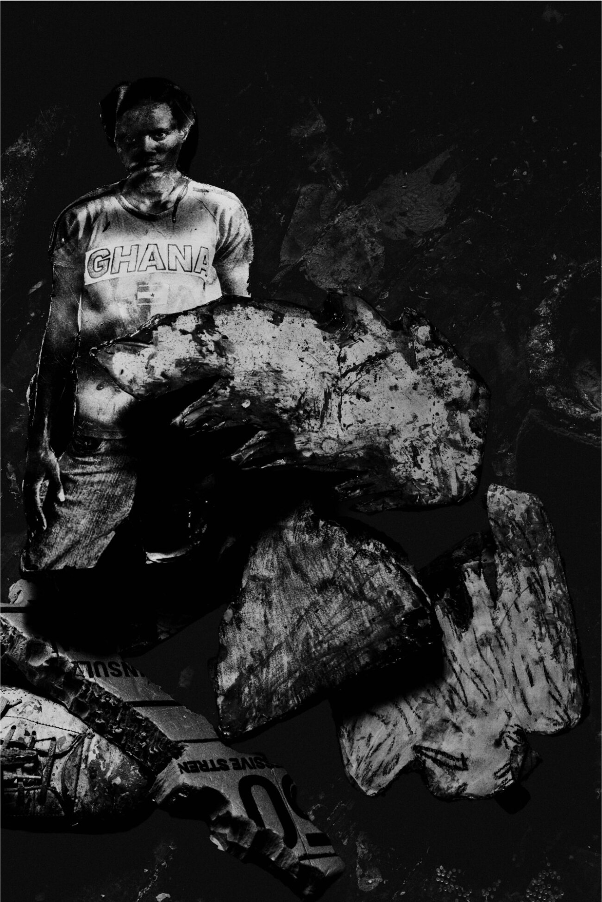
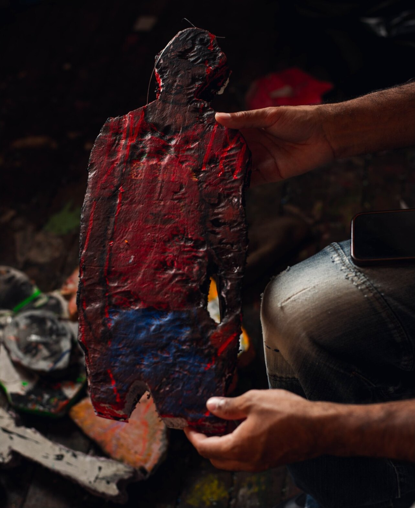

Q: How do you think about space. taking up space, and the spaces between your works in a gallery?
You just have to feel the space. Walk through it, see where different things can live, see how different objects charge a space in different ways. As far as taking up space: for me, if it’s not for me, I just don’t need to do it.

Q: Do you feel like the pieces come from you, or are revealed to you?
Both, honestly. I have a concept in my head, but then I’m following intuition: letting what happens naturally, happen.
That could mean trying to mimic the photograph, or just following the handmarks and gestures that feel right at the time.
Q: What’s your relationship to the term “spiritual technology”?
The interesting thing about using my own photographs is that I’m in front of each person I’ve photographed. So there’s something of my own experience that shows through in the image.
As for the title, I was thinking about technological formats, but also the expansion of how we consume spiritual aspects, or religion: YouTube, infomercials, whatever you come across on your timeline, good or bad, for your individual spirit.
It’s really an individual thing, a varying term. Personal fantasy, but also overarching.

Q: What do you think people will learn about this moment from viewing your work, years from now?
Art-making is reflective of the person. How they’re feeling, the outside factors at the time.
You could look at the specifics of me as a person—how I grew up, my parents’ background, family, school—and people can form an idea based on that.
There’s an intentionality behind it, even if it’s still being written. I don’t want to tell someone what they should feel. I’d rather let it speak for itself.
But it’s just the fact that it exists. Making something into a physical, real thing. That’s important.

Q: If you could describe Lloyd Foster in one word, what would it be?
Blackstar.